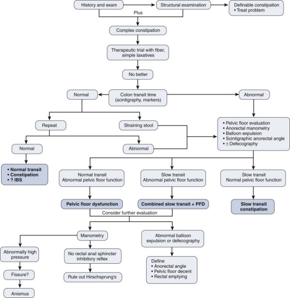
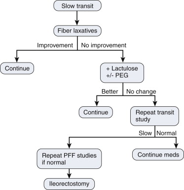
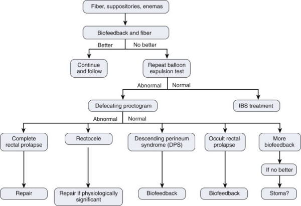

Constipation
DEFINITION
Constipation is defined by these parameters:
- straining during bowel movements >25% of the time
- hard stools >25% of the time
- incomplete evacuation >25% of the time
- 2 or fewer BM / week
- manual maneuvers >25% of the time
D I A B M
I M
INCIDENCE
Extremely common.
$1 Billion over-the-counter industy
Age
Dramatic increase in prevalence in those >65 years.
Rates of 60-70% in the institutionalised elderly.
Also more common in acute care facilities.
Sex
Females > male.
Geographic
Other ethnic groups > caucasian.
Low socioeconomic groups > high.
D
I
A
B
M
I
M
AETIOLOGY
Physiology
Stool consistency is a balance between absorption and
secretion in the gut.
10L of fluid per day is ingested/ secreted into the gut.
Most of this is absorbed in the jejunum, 3~L in ileum.
Colon avidly absorbs the final 1-2L/day.
Innervation
Intrinsic innervation = enteric nervous system.
Myenteric plexus of Auerbach and submucosal plexus of Meissner run
in the muscular and submucosal areas of the intestinal wall
respectively.
Coordinates smooth muscle function and water/ electrolyte
absorption.
Also myenteric / ICC mediated patterning of excitation.
Extrinsic innervation = vagus nerve.
Distal colon, internal anal sphincter, motor activity of the
rectosigmoid - pelvic nerve.
External anal sphincter and muscles of the pelvic floor - pudendal
nerve.
Overall control descends from the brain.
Normal defecation
Peristalsis spreads from the proximal colon to the rectum.
Effectiveness of this peristalsis determines the need for use of
abdominal muscles and diaphragm.
Receptors in the upper anal canal trigger the urge to defecate on
contact with faeces.
Sitting or squatting with hip flexion stretches the anal canal.
Puborectalis muscle relaxes to straighten the anorectal angle, and
external anal sphincter relaxes.
Aetiology
Abnormalities of any of the above components may induce
constipation.
Nerves
Congenital - e.g. Hirschprung's, spina bifida.
Inflammatory - infections (e.g. Chagas), autoimmune, autonomic
neuropathies of any cause.
Tumours - compressive lesions, brain tumours.
Degenerative - brain disorders (e.g. cerebrovascular disease,
Parkinson's, MS, dementia).
Trauma - spinal, head.
Metabolic - amyloid, any autonomic neuropathy.
DPT - morphine, antacids, antispasmodics, antidepressants,
antiparkinsonians, antipsychotics, antidiarrhoeal agents,
anti-hypertensives (esp Ca channel blockers), anti-inflammatories,
anticonvulsants, minerals (Al, Ca, Pb, As), OCP.
Laxative abuse.
Myenteric
ICC depletion, e.g. post-inflammatory
Metabolic diseases - hypothyroidism, electrolyte imbalances
(hypercalcaemia, hypokalaemia), uraemia.
DPT - heavy metals.
'Bowel'
Inflammatory bowel diseases.
Irritable bowel syndrome.
Iatrogenic - stricture, surgery.
Stool
Consistence
Low fibre, low fluid intake --> hard small stools
D
I
A
B
M
I
M
BIOLOGICAL BEHAVIOUR
Varies by causes above.
There is another subset of patients where no specific cause may be
found.
Classification
Based on tests (see investigations), patients can be generally
classified into these groups:
1. Colonic inertia / slow-transit constipation
2. Pelvic floor dysfunction (obstructive defecation syndrome,
non-relaxing or paradoxic puborectalis, descending perineum
syndrome).
3. Slow transit and pelvic floor dysfunction.
4. Congenital (Hirschsprung)
5. Idiopathic (Irritable bowel)
6. Rectocele, enterocele, sigmoidocele.
Slow Transit Constipation
Dysmotility disease; cause unknown.
ICC depletion is one histological hallmark.
Normal colonoscopy, normal anal manometry (unless co-existent pelvic
floor dysfx).
- may have a tortuous colon; associated but not causative.
Diagnosed via colonic scintigraphy.
- images up to 48h later.
Simpler Sitz marker study: ingest capsules filled with radio-opaque
rings
- failure to expel 40 or 80% of markers on d3 and d5 respectively is
diagnostic.
- will be left scattered throughout the colon; (cf in the
rectosigmoid in pelvic floor dysfx).
Pelvic Floor Dysfx
Obstructive
defecation
May be mistaken by some pts.
Recurrent incomplete evacuations and return trips to the toilet
Need for digital evac and feeling of fullness.
Pathophysiology poorly understood.
Non-relaxing Puborectalis
or Paradoxic Puborectalis Contraction
Severe chronic constipation with difficulty evacuating.
Puborectalis indents lower rectum, accentuating the anorectal angle.
- opens angle anorectal during defecation, anal canal opens and
shortens
In non-relaxing p. the muscle paradoxically tightens, the angle
becomes more acute, and defecation may fail.
EMG studies show the paradoxic strain increase.
- but not very accurate / PPV, so must be clinical and test
correlation.
Descending Perineum
Syndrome
Perineum bulges down, blocking defecation.
Nerve injury during childbirth or excessive straining.
Hirschsprung
May present in adults as chronic constipation.
Absence of the rectal inhibitory reflex on anal manometry is
suggestive.
But definitive diagnosis requires rectal biopsy
--> absence of ganglion cells in mesenteric and submucosal plexi;
hypertrophied nerve trunks.
Rectocele, enterocele and
sigmoidocele
A sequelae rather than cause of chronic constipation
- but mimic symptoms of difficult defecation by causing obstruction
to the fecal stream.
Rectocele = protrusion of
rectal wall into vagina.
- various sizes; may be asymptomatic
--> mere presence does not warrant its repair; it is not usually
the true cause of the constipation
Enterocele =
peritoneum-lined sac that herniates through pelvic floor between
vagina and rectum.
- may be congenital, traction, pulsion and iatrogenic.
- congenital = rare; c.t. disorders
- traction = secondary to uterine and vaginal prolapse; often with
cystocele and rectocele.
- pulsion = Secondary to prolonged raised abdo pressures
- iatrogenic = post op; pathophysiology unclear.
Symptoms include pressure, protrusion, pelvic prolapse
Examine in lithotomy, ask to cough or strain; see bulge at apex of
vagina.
Sigmoidocele = more
elusive; requires careful evaluation
- redundant Pouch of Douglas protrudes through anterior rectal wall
+/- through anus
- mimics obstructive defecation.
D
I
A
B
M
I
M
MANIFESTATIONS
Approach to Constipated Patient
Symptoms
Important to define onset and duration.
Infrequent defecation.
Straining.
Discomfort.
Sense of incomplete evacuation.
Small, hard stools (somewhat subjective; relates to patient's
concept of the "ideal stool" - e.g. not too hard not too soft and
swirls twice around the pan).
Must ask about pain on defecation and the presence of blood in the
stools/ pan/ on the paper.
Faecal soiling - due to impaction.
Associated symptoms
Frequency of BM as important as symptoms between BMs
- if bloating and pain prominent, consider irritable bowel
Detailed dietery history may reveal contributing factors
Urinary symptoms - associated with neurological dysfunction.
Features of other underlying disorders.
Signs
Abdomen
- may be distended, and faecal mass may be palpable.
Perineum
- external haemorrhoids, anal fissures, rectal prolapse.
PR
- tumours, sphincter tone, tenderness, puborectalis muscle function,
faecal impaction.
Proctoscopy +/- sigmoidoscopy.
D
I
A
B
M
I
M
INVESTIGATIONS
Bloods
FBC, TFT, electrolytes, serum calcium.
AXR
Assess degree of faecal loading.
Endoscopy
Barium enema/ colonoscopy indicated with a change in bowel habit.
Colonic transit studies/ anorectal manometry/ defecography as
indicated.
Anal Manometry
Resting and squeeze pressures of sphincters with balloon expulsion
- sitting on toilet or L lateral decubitus
Insertion and slow removal of pressure catheter - recto-anal
inhibitory reflex.
Pudendal nerve motor latency and
electromyogram
Controversial. Test striated sphincter complex.
In latency test, a finger electrode introduced. Measure lag
between stim and contraction.
EMG is electrical recording at external sphincter.
Note
Care with interpreting such tests
Chicken and egg situation; pts may have pelvic floor injuries from
chronic straining.
Also weak sensitivity and specificity; normal patients may have
abnormal results.
Evaluation Algorithm
Constipation is simple or
complex

D
I
A
B
M
I
M
MANAGEMENT
Principles
Varies with cause - general measures outlined below.
Resolution may be neither easy nor rapid.
Set expectations accordingly.
Constipation is not normal, and can be treated with a simple plan.
Diet
Fibre - plant cell walls,
12 slices of wholemeal bread or 3 ounces of bran.
Fruit, legumes, cereals, pasta, rice, seeds and nuts.
Increases bowel motility, water content, as well as faecal mass.
- must drink enough water
Also provides a substrate for bugs to live on and contribute to
stool bulk, stimulating colonic motility.
Make sure cost, dentition and other factors are not an obstacle.
Flatulence is a complication.
*Don't bulk up stools if they have strictures - may cause
obstruction.
Fluids
Essential.
Minimum 1.5L per day, they may forget unless strongly emphasized.
Jug at the bedside helps to remind them, and carers track intake.
Exercise
Even a small amount helps.
Does not need to be vigorous or excessive.
Toilet Habit
There is an optimal time to go to the toilet.
This parallels periods of high motility, i.e. after meals, after
waking.
On consuming a meal, colonic contractility urges defecation.
Using the same toilet and going at the same time every day may help.
Chronically suppressing or postponing the urge to defecate may cause
hardening.
Lack of privacy will not help, as occurs in hospital wards.
Pharmaceuticals
30% of healthy elderly use laxatives regularly, though 55% of these
are not constipated.
Cure rate of placebo in self-reported constipation is 60%.
Bulk-forming agents
e.g. metamucil
Synthetic or natural fibers.
Preferred agent if conservative measures fail.
Safe option long term, but must keep fluids high as they demand
fluid else --> worsen constipation.
Stool softeners
e.g. docusate
Not strictly laxatives, but soften stool so reduce straining.
Increase the entry of water into stool by acting as surfactants.
Once again, need a good fluid intake.
No evidence that they are better than placebo.
Should not be used long-term, but often are.
Often combined with an irritant laxative, e.g. coloxyl and senna.
Lubricants
e.g. paraffin, a hydrocarbon.
Coat stool, lubricating - may be combined with stimulant laxatives.
Not recommended for older patients.
Contraindicated in oesophageal/ gastric abnormalities.
Should be given between meals.
Osmotic agents
e.g. lactulose, sorbitol, mannitol, mag sulphate.
Act to increase fluid in colon lumen, increasing motility.
Lactulose reaches colon
unchanged, and is digested by bacteria.
Irritant/ stimulant
e.g. phenolphthalein, castor oil, senna.
Act in a manner similar to cholera toxin, increasing intraluminal
secretion of water and electrolytes.
May also increase colonic motility.
Long term may cause electrolyte disturbance and malabsorption.
Hence not laxatives of choice, especially in the older person.
Suppositories and
enemas
Introduced rectally, softening stools and increasing peristalsis.
Suppositories are particularly useful if the stool is in the rectum.
Some initiate the urge to defecate, others just soften.
Enemas act partly through mechanical distension.
Improper technique may cause perforation and long term these agents
reduce rectal tone.
Movicol
Contains macrogel that passes through tract
Bulks stool
Softens stool by adding retained water
Triggers peristalsis
Lubricates.
Laxative Abuse
Continual use --> higher doses required.
--> Atonic bowel in long term
Other dangers are fluid loss, melanosis coli after anthracine
containing laxatives (e.g. senna) - indication that someone has been
abusing them.
Fecal Impaction
Evident on DRE
Can use fleet, warm tap water, soapsuds, olive-oil enemas.
Simultaneous oral agent eg movicol, picoprep.
Manual disimpaction = almost never required.
Slow Transit Constipation

Surgical option = abdominal colectomy and ileorectal anastomosis.
- preferably laparoscopic.
Long term results suggest --> long-term durable symptom relief
and improved QOL
- but warn re risk of increased frequency (mean 4/day)
- satisfaction rates 85-95% (~90%).
Pelvic Floor Dysfunction

Obstructive defecation syndrome
Mainstay of therapy is pelvic-floor retraining.
STARR is a recent surgical approach = full-thickness rectal
resection with 2 rounds of a stapler.
- same device used for haemorrhoids
Long term outcomes unknown and this procedure is controversial.
- morbidity may well be unacceptable, and problems may be multiple.
Non-relaxing puborectalis or
paradoxic puborectalis
Biofeedback and retraining; repetitive physical therapy.
2-week intensive course.
Botox described in some small studies.
Sacral nerve stimulation is investigational.
Descending perineum syndrome
Aggressive pelvic floor retraining.
Success rates still dismal.
Slow-Transit with Pelvic Floor
Retraining
1. Aggressive pelvic floor retraining.
2. Once improved STC algorithm, bearing in mind may need repeat
training and that surgery may not fix them due to dual problems.
Hirschsprung's
Depends on length aganglionic
Short segment --> medical management along
Long segment --> coloanal anastomosis or permanent stoma.
- ileal pouch-anal anastomosis has been performed in a few.
Rectocele, Enterocele, Sigmoidocele
Repair of rectocele is transvaginal or transrectal.
- attenuated rectovaginal septum fixed by use of mesh.
Enterocele involves uro/gynaecologist; various approaches
Sigmoidocoesl = uterosacral plication.
Antegrade Enemas
Idiopathic chronic constipation - has been suggested.
R colon mobilized, appendicostomy, fistailed with skin flap inset to
prevent stenosis.
Patients irrigate when bowel function returns, od to bd to maintain
patency.
- with saline, phosphate enema or both.
SNS
Not well studied.
Studies variable, not yet approved.
Recent trial = probably not effective in general; subgroup / further
analysis ongoing.
Stoma
May be a good option in selected patients for chronic constipation,
e.g. in some STC.
D
I
A
B
M
I
M